After completing this lesson, you will be able to:
Data streaming does not always use spatial data. Many data streams are actually non-spatial. For example, an air quality sensor may be fixed in place, reporting air quality levels at regular intervals. The data may remain non-spatial for the entire analysis, or one might enrich the non-spatial data with spatial data for further processing or analysis. If your stream consists of multiple air quality sensors, you can use a unique sensor ID to add the spatial locations for the sensors, generating maps of air quality levels.
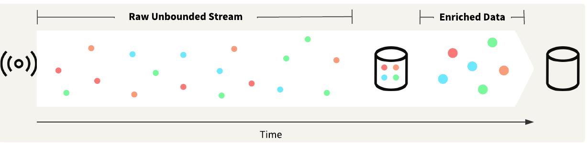
The City of Vancouver fleet location stream reports vehicle locations using GeoJSON. Our workspace creates geometry from the GeoJSON for spatial analysis on the vehicles.
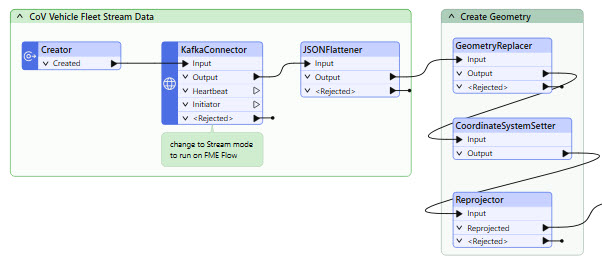
`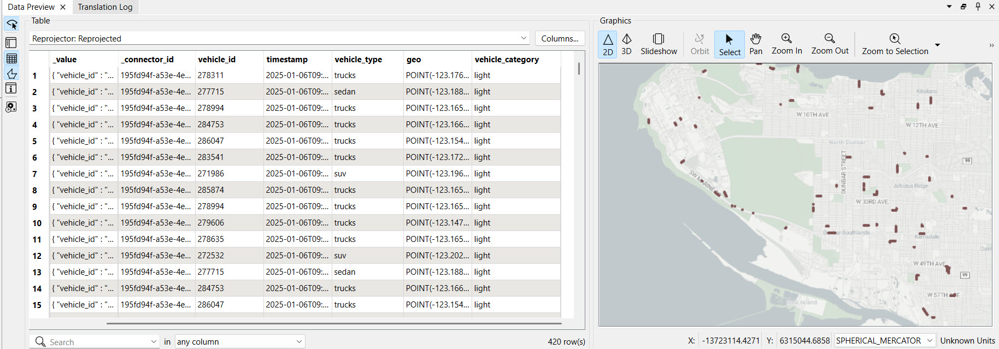
One of the simplest ways to work with spatial stream data is to filter records based on their location, which typically involves reading another spatial dataset and then clipping or joining your stream data to that dataset. You may want to trigger an alert if a stream data record remains within a particular area for a specified amount of time.
We will filter the City of Vancouver fleet data stream by location in the exercise below. We're only interested in vehicles outside the City of Vancouver boundary, so we will use a SpatialFilter to filter out vehicle locations within the city boundary and continue processing and analyzing the remaining records.
You may create buffers around stream data records or static data to compare the stream data against. You usually use buffers to determine if a record is within a certain proximity to another record or records. You can use a buffer to filter stream data records that are inside, outside, or within a certain distance of the buffer location.
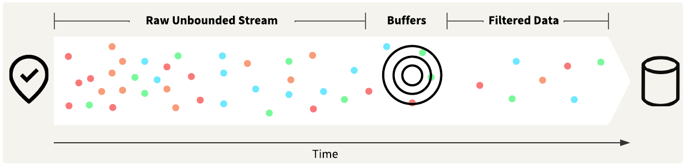
For example, you have stream data on trucks carrying hazardous materials. The trucks are supposed to stay at least 500 m from any schools or playgrounds. You would create a buffer around the schools and playgrounds and configure an alert to send if the GPS location of a truck overlaps with a buffered area.
You may also use geofences to analyze your stream data spatially. Static geofences function similarly to location filtering, where stream data records are filtered based on whether they are present within a specified spatial area. Dynamic geofences refer to spatial filtering on areas that may change frequently. You may create your geofences from static data sources or from the stream data itself.
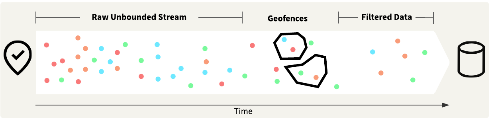
For example, ride share apps rely on drivers reporting their location and dispersing themselves to be quickly accessible to their app users. If a cluster of app users is present without any drivers within a 1-kilometer radius, the drivers are alerted to redistribute themselves to cover the area better.
Jennifer only needs to send an alert if the trucks are outside of the City of Vancouver boundary. She's already set up a bookmark that reads in the City of Vancouver boundary as a KML file. The next step is to clip the data and determine which vehicle records are outside the boundary.
In this exercise, you will:
Continue with the same workspace open in FME Workbench from the previous exercise.
Use the down arrow to expand the CoV Boundary bookmark.
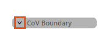
Right-click the bookmark and select Enable All Objects in Bookmark.
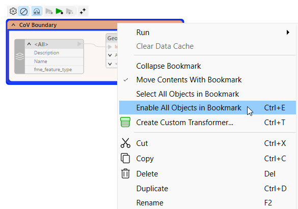
Add a SpatialFilter to the canvas. Connect the Tester Passed port to the Candidate input on the SpatialFilter, and connect the GeometryFilter Area port to the Filter input.
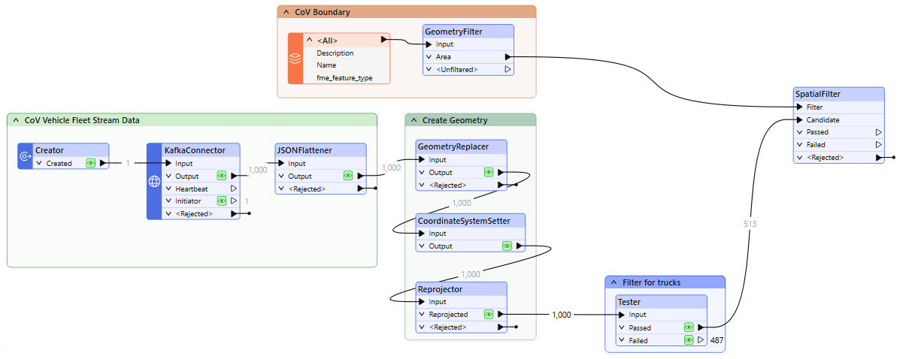
Open the SpatialFilter properties. Set the Filter Type to "Filters First" and change the Spatial Predicates to Test to "Filter OGC-Contains Candidate".
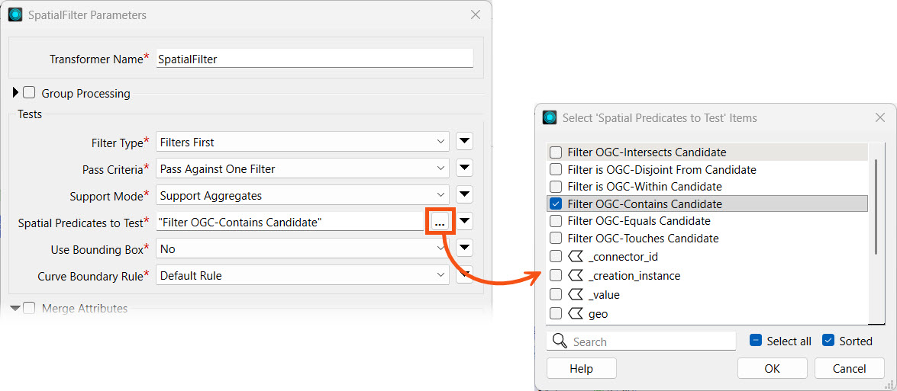
Turn off Merge Attributes. Your SpatialFilter parameters should look like this:
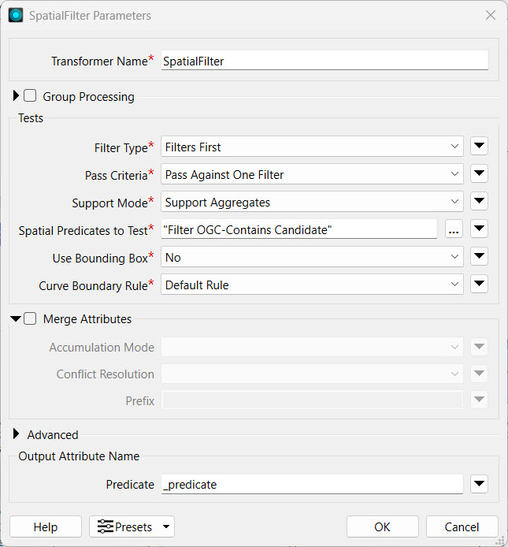
Click OK to close the SpatialFilter Parameters.
To organize and document your workspace, add a bookmark or annotation for the SpatialFilter and describe its functionality.
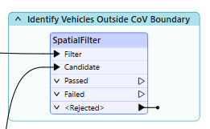
Click the down arrow next to Run and select Rerun Entire Workspace.
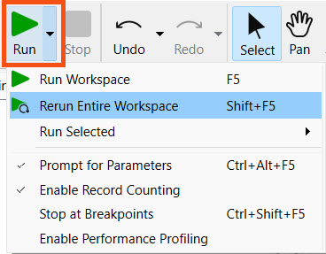
We rerun the entire workspace here instead of just running from the data caches because our SpatialFilter is set to receive Filters First. If you only run the uncached portions of the workspace, the SpatialFilter will reject features because the CoV Boundary records have not arrived at the SpatialFilter before the cached data from the Tester transformer arrives. The Creator transformer is also set to run any readers in the workspace before creating a record to run the KafkaConnector, which ensures the filters will arrive to the SpatialFilter before the streamed data records.
FME will run the transformers with data caches from the previous exercises again, then filter against the City of Vancouver boundary that it reads into the workspace. A portion of the data goes through the Failed port; these are the trucks outside of Vancouver.
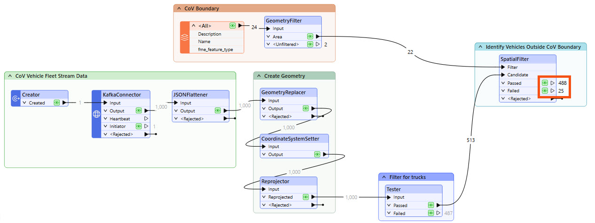
The exact record counts from that are sent through the Passed and Failed ports will differ from what is shown in the screenshot. Because our data is a continuous stream, different data records are received at varying times, so it is unlikely that your workspace record counts and those of others will match exactly.